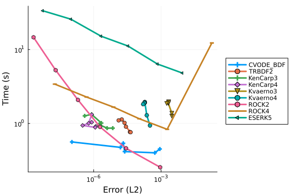

Filament Work-Precision Diagrams
Filament Benchmark
In this notebook we will benchmark a real-world biological model from a paper entitled Magnetic dipole with a flexible tail as a self-propelling microdevice. This is a system of PDEs representing a Kirchhoff model of an elastic rod, where the equations of motion are given by the Rouse approximation with free boundary conditions.
Model Implementation
First we will show the full model implementation. It is not necessary to understand the full model specification in order to understand the benchmark results, but it's all contained here for completeness. The model is highly optimized, with all internal vectors pre-cached, loops unrolled for efficiency (along with @simd annotations), a pre-defined Jacobian, matrix multiplications are all in-place, etc. Thus this model is a good stand-in for other optimized PDE solving cases.
The model is thus defined as follows:
using OrdinaryDiffEq, ODEInterfaceDiffEq, Sundials, DiffEqDevTools, LSODA, LinearSolve
using LinearAlgebra
using Plots
gr()Plots.GRBackend()const T = Float64
abstract type AbstractFilamentCache end
abstract type AbstractMagneticForce end
abstract type AbstractInextensibilityCache end
abstract type AbstractSolver end
abstract type AbstractSolverCache endstruct FerromagneticContinuous <: AbstractMagneticForce
ω :: T
F :: Vector{T}
end
mutable struct FilamentCache{
MagneticForce <: AbstractMagneticForce,
InextensibilityCache <: AbstractInextensibilityCache,
SolverCache <: AbstractSolverCache
} <: AbstractFilamentCache
N :: Int
μ :: T
Cm :: T
x :: SubArray{T,1,Vector{T},Tuple{StepRange{Int,Int}},true}
y :: SubArray{T,1,Vector{T},Tuple{StepRange{Int,Int}},true}
z :: SubArray{T,1,Vector{T},Tuple{StepRange{Int,Int}},true}
A :: Matrix{T}
P :: InextensibilityCache
F :: MagneticForce
Sc :: SolverCache
endstruct NoHydroProjectionCache <: AbstractInextensibilityCache
J :: Matrix{T}
P :: Matrix{T}
J_JT :: Matrix{T}
J_JT_LDLT :: LinearAlgebra.LDLt{T, SymTridiagonal{T}}
P0 :: Matrix{T}
NoHydroProjectionCache(N::Int) = new(
zeros(N, 3*(N+1)), # J
zeros(3*(N+1), 3*(N+1)), # P
zeros(N,N), # J_JT
LinearAlgebra.LDLt{T,SymTridiagonal{T}}(SymTridiagonal(zeros(N), zeros(N-1))),
zeros(N, 3*(N+1))
)
endstruct DiffEqSolverCache <: AbstractSolverCache
S1 :: Vector{T}
S2 :: Vector{T}
DiffEqSolverCache(N::Integer) = new(zeros(T,3*(N+1)), zeros(T,3*(N+1)))
endfunction FilamentCache(N=20; Cm=32, ω=200, Solver=SolverDiffEq)
InextensibilityCache = NoHydroProjectionCache
SolverCache = DiffEqSolverCache
tmp = zeros(3*(N+1))
FilamentCache{FerromagneticContinuous, InextensibilityCache, SolverCache}(
N, N+1, Cm, view(tmp,1:3:3*(N+1)), view(tmp,2:3:3*(N+1)), view(tmp,3:3:3*(N+1)),
zeros(3*(N+1), 3*(N+1)), # A
InextensibilityCache(N), # P
FerromagneticContinuous(ω, zeros(3*(N+1))),
SolverCache(N)
)
endMain.var"##WeaveSandBox#292".FilamentCachefunction stiffness_matrix!(f::AbstractFilamentCache)
N, μ, A = f.N, f.μ, f.A
@inbounds for j in axes(A, 2), i in axes(A, 1)
A[i, j] = j == i ? 1 : 0
end
@inbounds for i in 1 : 3
A[i,i] = 1
A[i,3+i] = -2
A[i,6+i] = 1
A[3+i,i] = -2
A[3+i,3+i] = 5
A[3+i,6+i] = -4
A[3+i,9+i] = 1
A[3*(N-1)+i,3*(N-3)+i] = 1
A[3*(N-1)+i,3*(N-2)+i] = -4
A[3*(N-1)+i,3*(N-1)+i] = 5
A[3*(N-1)+i,3*N+i] = -2
A[3*N+i,3*(N-2)+i] = 1
A[3*N+i,3*(N-1)+i] = -2
A[3*N+i,3*N+i] = 1
for j in 2 : N-2
A[3*j+i,3*j+i] = 6
A[3*j+i,3*(j-1)+i] = -4
A[3*j+i,3*(j+1)+i] = -4
A[3*j+i,3*(j-2)+i] = 1
A[3*j+i,3*(j+2)+i] = 1
end
end
rmul!(A, -μ^4)
nothing
endstiffness_matrix! (generic function with 1 method)function update_separate_coordinates!(f::AbstractFilamentCache, r)
N, x, y, z = f.N, f.x, f.y, f.z
@inbounds for i in 1 : length(x)
x[i] = r[3*i-2]
y[i] = r[3*i-1]
z[i] = r[3*i]
end
nothing
end
function update_united_coordinates!(f::AbstractFilamentCache, r)
N, x, y, z = f.N, f.x, f.y, f.z
@inbounds for i in 1 : length(x)
r[3*i-2] = x[i]
r[3*i-1] = y[i]
r[3*i] = z[i]
end
nothing
end
function update_united_coordinates(f::AbstractFilamentCache)
r = zeros(T, 3*length(f.x))
update_united_coordinates!(f, r)
r
endupdate_united_coordinates (generic function with 1 method)function initialize!(initial_conf_type::Symbol, f::AbstractFilamentCache)
N, x, y, z = f.N, f.x, f.y, f.z
if initial_conf_type == :StraightX
x .= range(0, stop=1, length=N+1)
y .= 0
z .= 0
else
error("Unknown initial configuration requested.")
end
update_united_coordinates(f)
endinitialize! (generic function with 1 method)function magnetic_force!(::FerromagneticContinuous, f::AbstractFilamentCache, t)
# TODO: generalize this for different magnetic fields as well
N, μ, Cm, ω, F = f.N, f.μ, f.Cm, f.F.ω, f.F.F
F[1] = -μ * Cm * cos(ω*t)
F[2] = -μ * Cm * sin(ω*t)
F[3*(N+1)-2] = μ * Cm * cos(ω*t)
F[3*(N+1)-1] = μ * Cm * sin(ω*t)
nothing
endmagnetic_force! (generic function with 1 method)struct SolverDiffEq <: AbstractSolver end
function (f::FilamentCache)(dr, r, p, t)
@views f.x, f.y, f.z = r[1:3:end], r[2:3:end], r[3:3:end]
jacobian!(f)
projection!(f)
magnetic_force!(f.F, f, t)
A, P, F, S1, S2 = f.A, f.P.P, f.F.F, f.Sc.S1, f.Sc.S2
# implement dr = P * (A*r + F) in an optimized way to avoid temporaries
mul!(S1, A, r)
S1 .+= F
mul!(S2, P, S1)
copyto!(dr, S2)
return dr
endfunction jacobian!(f::FilamentCache)
N, x, y, z, J = f.N, f.x, f.y, f.z, f.P.J
@inbounds for i in 1 : N
J[i, 3*i-2] = -2 * (x[i+1]-x[i])
J[i, 3*i-1] = -2 * (y[i+1]-y[i])
J[i, 3*i] = -2 * (z[i+1]-z[i])
J[i, 3*(i+1)-2] = 2 * (x[i+1]-x[i])
J[i, 3*(i+1)-1] = 2 * (y[i+1]-y[i])
J[i, 3*(i+1)] = 2 * (z[i+1]-z[i])
end
nothing
endjacobian! (generic function with 1 method)function projection!(f::FilamentCache)
# implement P[:] = I - J'/(J*J')*J in an optimized way to avoid temporaries
J, P, J_JT, J_JT_LDLT, P0 = f.P.J, f.P.P, f.P.J_JT, f.P.J_JT_LDLT, f.P.P0
mul!(J_JT, J, J')
LDLt_inplace!(J_JT_LDLT, J_JT)
ldiv!(P0, J_JT_LDLT, J)
mul!(P, P0', J)
subtract_from_identity!(P)
nothing
endprojection! (generic function with 1 method)function subtract_from_identity!(A)
lmul!(-1, A)
@inbounds for i in 1 : size(A,1)
A[i,i] += 1
end
nothing
endsubtract_from_identity! (generic function with 1 method)function LDLt_inplace!(L::LinearAlgebra.LDLt{T,SymTridiagonal{T}}, A::Matrix{T}) where {T<:Real}
n = size(A,1)
dv, ev = L.data.dv, L.data.ev
@inbounds for (i,d) in enumerate(diagind(A))
dv[i] = A[d]
end
@inbounds for (i,d) in enumerate(diagind(A,-1))
ev[i] = A[d]
end
@inbounds @simd for i in 1 : n-1
ev[i] /= dv[i]
dv[i+1] -= abs2(ev[i]) * dv[i]
end
L
endLDLt_inplace! (generic function with 1 method)Investigating the model
Let's take a look at what results of the model look like:
function run(::SolverDiffEq; N=20, Cm=32, ω=200, time_end=1., solver=TRBDF2(autodiff=false), reltol=1e-6, abstol=1e-6)
f = FilamentCache(N, Solver=SolverDiffEq, Cm=Cm, ω=ω)
r0 = initialize!(:StraightX, f)
stiffness_matrix!(f)
prob = ODEProblem(ODEFunction(f, jac=(J, u, p, t)->(mul!(J, f.P.P, f.A); nothing)), r0, (0., time_end))
sol = solve(prob, solver, dense=false, reltol=reltol, abstol=abstol)
endrun (generic function with 1 method)This method runs the model with the TRBDF2 method and the default parameters.
sol = run(SolverDiffEq())
plot(sol,vars = (0,25))The model quickly falls into a highly oscillatory mode which then dominates throughout the rest of the solution.
Work-Precision Diagrams
Now let's build the problem and solve it once at high accuracy to get a reference solution:
N=20
f = FilamentCache(N, Solver=SolverDiffEq)
r0 = initialize!(:StraightX, f)
stiffness_matrix!(f)
prob = ODEProblem(f, r0, (0., 0.01))
sol = solve(prob, Vern9(), reltol=1e-14, abstol=1e-14)
test_sol = TestSolution(sol);Omissions
abstols=1 ./10 .^(3:8)
reltols=1 ./10 .^(3:8)
setups = [
Dict(:alg => CVODE_BDF()),
Dict(:alg => Rosenbrock23(autodiff=false)),
Dict(:alg => Rodas4(autodiff=false)),
Dict(:alg => radau()),
Dict(:alg=>Exprb43(autodiff=false)),
Dict(:alg=>Exprb32(autodiff=false)),
Dict(:alg=>ImplicitEulerExtrapolation(autodiff=false)),
Dict(:alg=>ImplicitDeuflhardExtrapolation(autodiff=false)),
Dict(:alg=>ImplicitHairerWannerExtrapolation(autodiff=false)),
];
wp = WorkPrecisionSet(prob, abstols, reltols, setups; appxsol=test_sol,
maxiters=Int(1e6), verbose = false)
plot(wp)Rosenbrock23, Rodas4, Exprb32, Exprb43, extrapolation methods, and Rodas5 do not perform well at all and are thus dropped from future tests. For reference, they are in the 10^(2.5) range in for their most accurate run (with ImplicitEulerExtrapolation takes over a day to run, and had to be prematurely stopped), so about 500x slower than CVODE_BDF and thus make the benchmarks take forever. It looks like radau fails on this problem with high tolerance so its values should be ignored since it exits early. It is thus removed from the next sections.
The EPIRK methods currently do not work on this problem
sol = solve(prob, EPIRK4s3B(autodiff=false), dt=2^-3)Error: First call to automatic differentiation for the Jacobian
failed. This means that the user `f` function is not compatible
with automatic differentiation. Methods to fix this include:
1. Turn off automatic differentiation (e.g. Rosenbrock23() becomes
Rosenbrock23(autodiff=false)). More details can befound at
https://docs.sciml.ai/DiffEqDocs/stable/features/performance_overloads/
2. Improving the compatibility of `f` with ForwardDiff.jl automatic
differentiation (using tools like PreallocationTools.jl). More details
can be found at https://docs.sciml.ai/DiffEqDocs/stable/basics/faq/#Auto
differentiation-and-Dual-Numbers
3. Defining analytical Jacobians. More details can be
found at https://docs.sciml.ai/DiffEqDocs/stable/types/ode_types/#SciMLB
ase.ODEFunction
Note: turning off automatic differentiation tends to have a very minimal
performance impact (for this use case, because it's forward mode for a
square Jacobian. This is different from optimization gradient scenarios).
However, one should be careful as some methods are more sensitive to
accurate gradients than others. Specifically, Rodas methods like `Rodas4`
and `Rodas5P` require accurate Jacobians in order to have good convergence,
while many other methods like BDF (`QNDF`, `FBDF`), SDIRK (`KenCarp4`),
and Rosenbrock-W (`Rosenbrock23`) do not. Thus if using an algorithm which
is sensitive to autodiff and solving at a low tolerance, please change the
algorithm as well.
MethodError: Cannot `convert` an object of type
SubArray{ForwardDiff.Dual{ForwardDiff.Tag{DiffEqBase.OrdinaryDiffEqTag, F
loat64}, Float64, 1},1,Array{ForwardDiff.Dual{ForwardDiff.Tag{DiffEqBase.Or
dinaryDiffEqTag, Float64}, Float64, 1},1},Tuple{StepRange{Int64{},Int64{}}}
,true} to an object of type
SubArray{Float64,1,Array{Float64,1},Tuple{StepRange{Int64{},Int64{}}},tru
e}
Closest candidates are:
convert(::Type{T}, !Matched::LinearAlgebra.Factorization) where T<:Abstra
ctArray
@ LinearAlgebra /cache/julia-buildkite-plugin/julia_installs/bin/linux/x
64/1.9/julia-1.9-latest-linux-x86_64/share/julia/stdlib/v1.9/LinearAlgebra/
src/factorization.jl:59
convert(::Type{T}, !Matched::T) where T<:AbstractArray
@ Base abstractarray.jl:16
convert(::Type{T}, !Matched::T) where T
@ Base Base.jl:64
...but would be called like:
abstols=1 ./10 .^(3:5)
reltols=1 ./10 .^(3:5)
setups = [
Dict(:alg => CVODE_BDF()),
Dict(:alg => HochOst4(),:dts=>2.0.^(-3:-1:-5)),
Dict(:alg => EPIRK4s3B(),:dts=>2.0.^(-3:-1:-5)),
Dict(:alg => EXPRB53s3(),:dts=>2.0.^(-3:-1:-5)),
];
wp = WorkPrecisionSet(prob, abstols, reltols, setups; appxsol=test_sol,
maxiters=Int(1e6), verbose = false)
plot(wp)High Tolerance (Low Accuracy)
Endpoint Error
abstols=1 ./10 .^(3:8)
reltols=1 ./10 .^(3:8)
setups = [
Dict(:alg => CVODE_BDF()),
Dict(:alg => BS3()),
Dict(:alg => Tsit5()),
Dict(:alg => ImplicitEuler(autodiff=false)),
Dict(:alg => Trapezoid(autodiff=false)),
Dict(:alg => TRBDF2(autodiff=false)),
Dict(:alg => rodas()),
Dict(:alg => dop853()),
Dict(:alg => lsoda()),
Dict(:alg => ROCK2()),
Dict(:alg => ROCK4()),
Dict(:alg => ESERK5())
];
wp = WorkPrecisionSet(prob, abstols, reltols, setups; appxsol=test_sol,
maxiters=Int(1e6), verbose = false)
plot(wp)abstols=1 ./10 .^(3:8)
reltols=1 ./10 .^(3:8)
setups = [
Dict(:alg => CVODE_BDF()),
Dict(:alg => ImplicitEuler(autodiff=false)),
Dict(:alg => TRBDF2(autodiff=false)),
Dict(:alg => KenCarp3(autodiff=false)),
Dict(:alg => KenCarp4(autodiff=false)),
Dict(:alg => Kvaerno3(autodiff=false)),
Dict(:alg => Kvaerno4(autodiff=false)),
Dict(:alg => ABDF2(autodiff=false)),
Dict(:alg => QNDF(autodiff=false)),
Dict(:alg => RadauIIA5(autodiff=false)),
];
wp = WorkPrecisionSet(prob, abstols, reltols, setups; appxsol=test_sol,
maxiters=Int(1e6), verbose = false)
plot(wp)abstols=1 ./10 .^(3:8)
reltols=1 ./10 .^(3:8)
setups = [
Dict(:alg => CVODE_BDF()),
Dict(:alg => CVODE_BDF(linear_solver=:GMRES)),
Dict(:alg => TRBDF2(autodiff=false)),
Dict(:alg => TRBDF2(autodiff=false,linsolve=KrylovJL_GMRES())),
Dict(:alg => KenCarp4(autodiff=false)),
Dict(:alg => KenCarp4(autodiff=false,linsolve=KrylovJL_GMRES())),
];
names = [
"CVODE-BDF",
"CVODE-BDF (GMRES)",
"TRBDF2",
"TRBDF2 (GMRES)",
"KenCarp4",
"KenCarp4 (GMRES)",
];
wp = WorkPrecisionSet(prob, abstols, reltols, setups; names=names, appxsol=test_sol,
maxiters=Int(1e6), verbose = false)
plot(wp)Timeseries Error
abstols=1 ./10 .^(3:8)
reltols=1 ./10 .^(3:8)
setups = [
Dict(:alg => CVODE_BDF()),
Dict(:alg => Trapezoid(autodiff=false)),
Dict(:alg => TRBDF2(autodiff=false)),
Dict(:alg => rodas()),
Dict(:alg => lsoda()),
Dict(:alg => KenCarp3(autodiff=false)),
Dict(:alg => KenCarp4(autodiff=false)),
Dict(:alg => Kvaerno3(autodiff=false)),
Dict(:alg => Kvaerno4(autodiff=false)),
Dict(:alg => ROCK2()),
Dict(:alg => ROCK4()),
Dict(:alg => ESERK5())
];
wp = WorkPrecisionSet(prob, abstols, reltols, setups; appxsol=test_sol,
maxiters=Int(1e6), verbose = false)
plot(wp)Timeseries errors seem to match final point errors very closely in this problem, so these are turned off in future benchmarks.
(Confirmed in the other cases)
Dense Error
abstols=1 ./10 .^(3:8)
reltols=1 ./10 .^(3:8)
setups = [
Dict(:alg => CVODE_BDF()),
Dict(:alg => TRBDF2(autodiff=false)),
Dict(:alg => KenCarp3(autodiff=false)),
Dict(:alg => KenCarp4(autodiff=false)),
Dict(:alg => Kvaerno3(autodiff=false)),
Dict(:alg => Kvaerno4(autodiff=false)),
Dict(:alg => ROCK2()),
Dict(:alg => ROCK4()),
Dict(:alg => ESERK5())
];
wp = WorkPrecisionSet(prob, abstols, reltols, setups; appxsol=test_sol,
maxiters=Int(1e6), verbose = false, dense_errors = true, error_estimate=:L2)
plot(wp)
Dense errors seem to match timeseries errors very closely in this problem, so these are turned off in future benchmarks.
(Confirmed in the other cases)
Low Tolerance (High Accuracy)
abstols=1 ./10 .^(6:12)
reltols=1 ./10 .^(6:12)
setups = [
Dict(:alg => CVODE_BDF()),
Dict(:alg => Vern7()),
Dict(:alg => Vern9()),
Dict(:alg => TRBDF2(autodiff=false)),
Dict(:alg => dop853()),
Dict(:alg => ROCK4())
];
wp = WorkPrecisionSet(prob, abstols, reltols, setups; appxsol=test_sol,
maxiters=Int(1e6), verbose = false)
plot(wp)abstols=1 ./10 .^(6:12)
reltols=1 ./10 .^(6:12)
setups = [
Dict(:alg => CVODE_BDF()),
Dict(:alg => radau()),
Dict(:alg => RadauIIA5(autodiff=false)),
Dict(:alg => TRBDF2(autodiff=false)),
Dict(:alg => Kvaerno3(autodiff=false)),
Dict(:alg => KenCarp3(autodiff=false)),
Dict(:alg => Kvaerno4(autodiff=false)),
Dict(:alg => KenCarp4(autodiff=false)),
Dict(:alg => Kvaerno5(autodiff=false)),
Dict(:alg => KenCarp5(autodiff=false)),
Dict(:alg => lsoda()),
];
wp = WorkPrecisionSet(prob, abstols, reltols, setups; appxsol=test_sol,
maxiters=Int(1e6), verbose = false)
plot(wp)
Timeseries Error
abstols=1 ./10 .^(6:12)
reltols=1 ./10 .^(6:12)
setups = [
Dict(:alg => CVODE_BDF()),
Dict(:alg => radau()),
Dict(:alg => RadauIIA5(autodiff=false)),
Dict(:alg => TRBDF2(autodiff=false)),
Dict(:alg => Kvaerno3(autodiff=false)),
Dict(:alg => KenCarp3(autodiff=false)),
Dict(:alg => Kvaerno4(autodiff=false)),
Dict(:alg => KenCarp4(autodiff=false)),
Dict(:alg => Kvaerno5(autodiff=false)),
Dict(:alg => KenCarp5(autodiff=false)),
Dict(:alg => lsoda()),
];
wp = WorkPrecisionSet(prob, abstols, reltols, setups; appxsol=test_sol,
maxiters=Int(1e6), verbose = false, error_estimate = :l2)
plot(wp)Dense Error
abstols=1 ./10 .^(6:12)
reltols=1 ./10 .^(6:12)
setups = [
Dict(:alg => CVODE_BDF()),
Dict(:alg => radau()),
Dict(:alg => RadauIIA5(autodiff=false)),
Dict(:alg => TRBDF2(autodiff=false)),
Dict(:alg => Kvaerno3(autodiff=false)),
Dict(:alg => KenCarp3(autodiff=false)),
Dict(:alg => Kvaerno4(autodiff=false)),
Dict(:alg => KenCarp4(autodiff=false)),
Dict(:alg => Kvaerno5(autodiff=false)),
Dict(:alg => KenCarp5(autodiff=false)),
Dict(:alg => lsoda()),
];
wp = WorkPrecisionSet(prob, abstols, reltols, setups; appxsol=test_sol,
maxiters=Int(1e6), verbose = false, dense_errors=true, error_estimate = :L2)
plot(wp)No Jacobian Work-Precision Diagrams
In the previous cases the analytical Jacobian is given and is used by the solvers. Now we will solve the same problem without the analytical Jacobian.
Note that the pre-caching means that the model is not compatible with autodifferentiation by ForwardDiff. Thus all of the native Julia solvers are set to autodiff=false to use DiffEqDiffTools.jl's numerical differentiation backend. We'll only benchmark the methods that did well before.
N=20
f = FilamentCache(N, Solver=SolverDiffEq)
r0 = initialize!(:StraightX, f)
stiffness_matrix!(f)
prob = ODEProblem(ODEFunction(f, jac=nothing), r0, (0., 0.01))
sol = solve(prob, Vern9(), reltol=1e-14, abstol=1e-14)
test_sol = TestSolution(sol.t, sol.u);High Tolerance (Low Accuracy)
abstols=1 ./10 .^(3:8)
reltols=1 ./10 .^(3:8)
setups = [
Dict(:alg => CVODE_BDF()),
Dict(:alg => BS3()),
Dict(:alg => Tsit5()),
Dict(:alg => ImplicitEuler(autodiff=false)),
Dict(:alg => Trapezoid(autodiff=false)),
Dict(:alg => TRBDF2(autodiff=false)),
Dict(:alg => rodas()),
Dict(:alg => dop853()),
Dict(:alg => lsoda())
];
wp = WorkPrecisionSet(prob, abstols, reltols, setups; appxsol=test_sol,
maxiters=Int(1e6), verbose = false)
plot(wp)abstols=1 ./10 .^(3:8)
reltols=1 ./10 .^(3:8)
setups = [
Dict(:alg => CVODE_BDF()),
Dict(:alg => BS3()),
Dict(:alg => Tsit5()),
Dict(:alg => ImplicitEuler(autodiff=false)),
Dict(:alg => Trapezoid(autodiff=false)),
Dict(:alg => TRBDF2(autodiff=false)),
Dict(:alg => rodas()),
Dict(:alg => dop853()),
Dict(:alg => lsoda()),
Dict(:alg => ROCK2()),
Dict(:alg => ROCK4()),
Dict(:alg => ESERK5())
];
wp = WorkPrecisionSet(prob, abstols, reltols, setups; appxsol=test_sol,
maxiters=Int(1e6), verbose = false)
plot(wp)
abstols=1 ./10 .^(3:8)
reltols=1 ./10 .^(3:8)
setups = [
Dict(:alg => CVODE_BDF()),
Dict(:alg => CVODE_BDF(linear_solver=:GMRES)),
Dict(:alg => TRBDF2(autodiff=false)),
Dict(:alg => TRBDF2(autodiff=false,linsolve=KrylovJL_GMRES())),
Dict(:alg => KenCarp4(autodiff=false)),
Dict(:alg => KenCarp4(autodiff=false,linsolve=KrylovJL_GMRES())),
];
names = [
"CVODE-BDF",
"CVODE-BDF (GMRES)",
"TRBDF2",
"TRBDF2 (GMRES)",
"KenCarp4",
"KenCarp4 (GMRES)",
];
wp = WorkPrecisionSet(prob, abstols, reltols, setups; names=names, appxsol=test_sol,
maxiters=Int(1e6), verbose = false)
plot(wp)
Low Tolerance (High Accuracy)
abstols=1 ./10 .^(6:12)
reltols=1 ./10 .^(6:12)
setups = [
Dict(:alg => CVODE_BDF()),
Dict(:alg => radau()),
Dict(:alg => RadauIIA5(autodiff=false)),
Dict(:alg => TRBDF2(autodiff=false)),
Dict(:alg => Kvaerno3(autodiff=false)),
Dict(:alg => KenCarp3(autodiff=false)),
Dict(:alg => Kvaerno4(autodiff=false)),
Dict(:alg => KenCarp4(autodiff=false)),
Dict(:alg => Kvaerno5(autodiff=false)),
Dict(:alg => KenCarp5(autodiff=false)),
Dict(:alg => lsoda()),
];
wp = WorkPrecisionSet(prob, abstols, reltols, setups; appxsol=test_sol,
maxiters=Int(1e6), verbose = false)
plot(wp)
Conclusion
Sundials' CVODE_BDF does the best in this test. When the Jacobian is given, the ESDIRK methods TRBDF2 and KenCarp3 are able to do almost as well as it until <1e-6 error is needed. When Jacobians are not given, Sundials is the fastest without competition.
Error: ArgumentError: Package SciMLBenchmarks not found in current path, ma
ybe you meant `import/using ..SciMLBenchmarks`.
- Otherwise, run `import Pkg; Pkg.add("SciMLBenchmarks")` to install the Sc
iMLBenchmarks package.